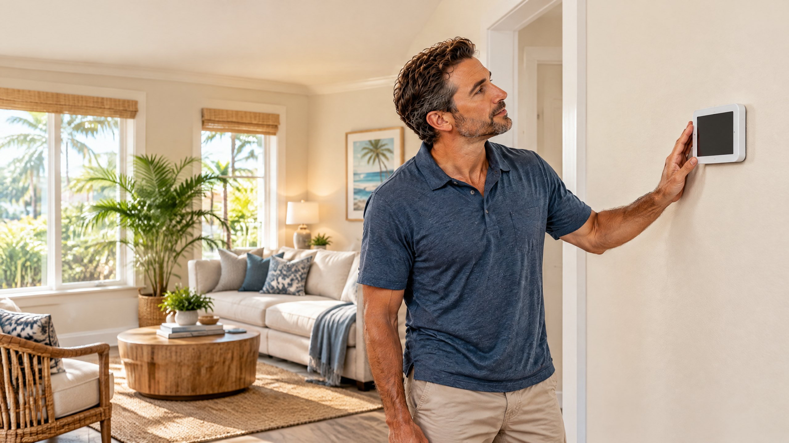

Direct Answer
If your thermostat is blank and the AC will not start, check model-approved batteries and accessible HVAC power first. An overflow switch can also stop cooling on some systems. A dark display does not identify the failed part. Do not open electrical panels or bypass a switch; request an AC diagnosis if the basic checks do not restore operation.

You go to lower the temperature, but the thermostat is dark and the house is warming up. This article focuses on a blank thermostat display when central AC does not start. It is not a guide to every no-cooling problem: if your thermostat is lit and calling for cooling, use our separate AC running but not cooling checklist. Knowing whether the screen is blank helps narrow what to report when you call.
A wall thermostat may run on batteries, receive low-voltage power from the indoor equipment, or use both. A blank screen can mean lost power, depleted batteries on a compatible model, or a control issue. Carrier’s thermostat troubleshooting guide lists batteries and an interrupted breaker among common explanations, but recommends professional inspection when the screen stays dark after basic checks.[1] Do not buy a new thermostat based on the screen alone.
First, Check What You Can See Without Opening Equipment
Start by noting what happened immediately before the screen went dark. Was there a neighborhood outage or a breaker trip? Did you notice water by the indoor unit? Does the display light up when you tap it, or is it completely unresponsive? These observations do not identify the failed part, but they can help a technician distinguish an isolated wall-control problem from a wider loss of HVAC power.
Look up your thermostat model. If its manual confirms user-replaceable batteries, install the specified batteries. Some smart controls are powered by the HVAC system rather than ordinary batteries; guessing at a battery compartment or prying a sealed device off the wall can damage it. If a battery change restores the display, check whether the AC actually starts after its normal control delay. Carrier notes that a working display and a nonresponsive HVAC system are different symptoms.[1]
Check the accessible electrical panel. Look for the breaker labeled for the indoor air handler or HVAC system. If it is tripped, follow the equipment maker’s instructions for a single reset only if you are comfortable doing so. If it trips again, leave it off and arrange AC repair evaluation; a repeated trip is not a setting to keep clearing. Do not remove an electrical-panel cover or touch exposed wiring. Check an obvious, accessible indoor-unit switch only if you can identify it without opening an equipment cabinet.
| What you observe | What it may mean | Useful next step |
|---|---|---|
| Blank display after an outage | Thermostat or indoor equipment may not have restored power | Check the manual and accessible breaker once |
| Blank display on a battery-powered model | Batteries may be depleted | Use the model’s specified replacement batteries |
| AC stopped and visible water is near the indoor unit | Drainage or overflow protection may need attention | Turn cooling off if possible and request service |
| Display returns but cooling still does not start | The remaining problem may be outside the display | Report both symptoms for a technician to test |
Can an Overflow Switch Stop the AC?
Yes, depending on the equipment and how its controls are wired. Cooling removes moisture from indoor air; condensate collects in a pan and drains away. If the drain backs up, an installed overflow switch may interrupt cooling to limit water damage. Trane describes switches that shut off the outdoor equipment and supply fan, and also notes that not every air handler has the same overflow-switch setup.[2] Carrier specifically includes visible drain-pan water or a tripped overflow switch among possible clues when investigating a blank thermostat.[1]
That does not mean every blank thermostat in Tampa has a clogged drain. The effect on the wall display depends on where a switch is installed and how it is wired; electrical or control faults are also possible. If you can see standing water in an accessible pan without reaching into the unit, note it and keep belongings clear of the area. Do not defeat the float switch to force cooling back on. Our focused article on repeated AC drain-line clogs explains the separate drainage issue, and our condensate drain service page describes the available service.
Tampa’s long cooling season means indoor equipment can produce condensate on many operating days, so moisture observations can be especially useful context when the air handler stops. That is local context, not a diagnosis. A technician can inspect the drain, pan, switch and electrical controls as appropriate instead of assuming the most familiar symptom is the cause.
Blank Screen, Lit Screen, or Wi-Fi Offline: Why the Distinction Matters
A blank thermostat is different from a thermostat that shows the temperature but cannot start cooling. The second situation may involve mode, settings, a normal equipment delay, a communication issue, or a fault elsewhere in the system. Trane’s thermostat support separates loss of Wi-Fi connection from a truly blank screen and advises a technician to inspect a thermostat and wiring if the blank condition persists after model-specific troubleshooting.[3] A disconnected phone app by itself does not prove the wall control has lost power.
There is also a difference between a display that goes dark overnight because of a user setting and a device that does not respond to touch or buttons at any time. Check the owner’s manual for display-sleep settings before assuming a failure. If the home has a proprietary communicating system, replacing the thermostat with a generic unit may not be compatible. Ask for thermostat repair or control diagnosis rather than buying a replacement first.
What to tell the technician
“The thermostat display is completely blank and the AC will not start. The last normal cooling was about [time]. I checked [battery type, if applicable] and [breaker status]. I did or did not see water near the accessible indoor unit.” Report a burning odor, a repeatedly tripping breaker, or visible water promptly; avoid opening panels to gather more information.
When Should a Tampa Homeowner Request AC Service?
Request service when the display stays blank after a model-appropriate battery check and an accessible power check, when a breaker trips again, when visible water accompanies the shutdown, or when the display comes back but cooling still does not start. These patterns call for testing rather than a guess at the thermostat, transformer, control wiring, or drain switch. Do not touch refrigerant components or electrical terminals.
On The Way Heating & Air serves Tampa, Lutz, Wesley Chapel, and nearby North Tampa communities. Dustin Miller began working in HVAC with his father in 2006. Describe the screen and AC behavior when requesting service so the visit can focus on the observed problem; a symptom alone does not establish a repair price or the failed part.
Frequently Asked Questions
Does a blank thermostat mean I need a new thermostat?
No. A depleted battery on a compatible model, interrupted indoor-unit power, an overflow switch, or a control problem may produce a similar symptom. Determine how the thermostat is powered and have the cause tested before approving a replacement.
Can a clogged AC drain make my thermostat go blank?
It can on some installations if the overflow switch interrupts the control circuit, but the exact behavior depends on wiring. Water at an accessible pan is a clue, not proof. Do not bypass an overflow switch; request an inspection if drainage may be involved.
Should I keep resetting the breaker until the AC starts?
No. If a breaker trips again after a single appropriate reset, leave it off and ask a technician to inspect the underlying problem. Do not remove the panel cover or work on wiring yourself.
What if the thermostat is on but the AC still will not cool?
A lit thermostat and failed cooling call are a different symptom. Check the mode and settings, allow for any normal equipment delay described by the manual, and report what the indoor and outdoor units are doing if service is needed.
Sources
- Carrier: Common Thermostat Issues and How to Troubleshoot
- Trane: HVAC Air Handler Overflow Switch
- Trane: Thermostat Controls Troubleshooting
About the Publisher
On The Way Heating & Air serves Tampa and North Tampa. Owner Dustin Miller began working in HVAC with his father in 2006. This general guide identifies useful observations when a thermostat is blank; it does not diagnose an individual system. An HVAC technician can confirm the cause and discuss an appropriate repair.